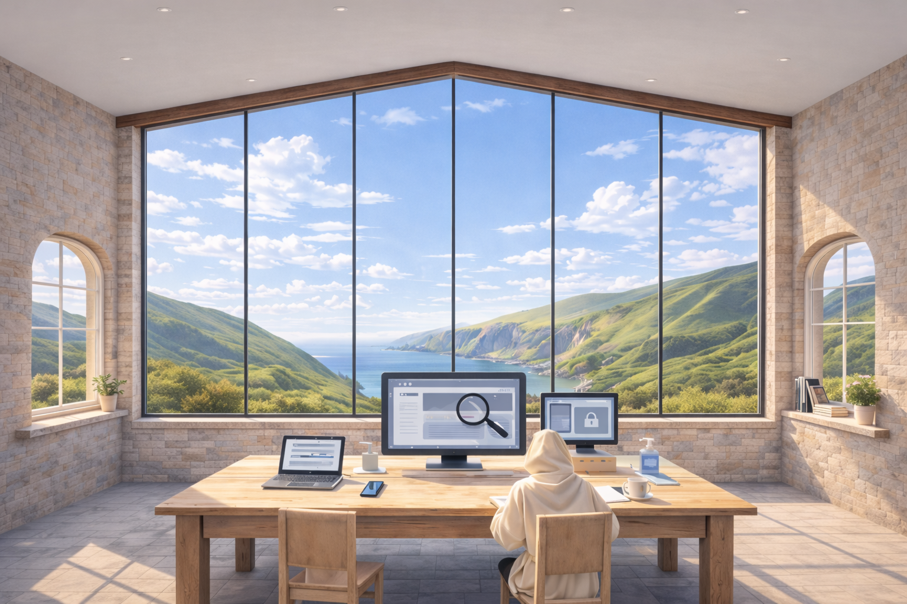

Modern utility. Traditional methodology. Guaranteed Solutions.

Live operations and development pipeline
The Waylight Workbench
The workbench shows current reference builds, active demonstration work, and the supporting material behind the Waylight delivery model.
It is intended to be transparent without feeling internal: enough detail to show what is live, what is available for discussion, and how delivery decisions are made.
Some client context is intentionally anonymised so methods can be shared without exposing private information.
Current pipeline
Projects
Snapshot only. Stages and target dates are adjusted as work moves, and the list keeps a compact frame so newer items can be explored by scrolling within it.
Project
Type
Stage
Status
Next action
Target
Links (Demo + Current Status)
Notes
Case Study
Waylight Build - Business Site
Website Build
Monthly Maintenance
Completed
Monthly maintenance plan and bi-annual recertification
A compact business website designed as the reference implementation for the Waylight Atlantic model.
The site demonstrates the principles used in client projects: calm structure, low cognitive load, and long-term maintainability through static delivery.
Brief / Problem
There was no previous site. The challenge was to create a working reference model for the Waylight approach.
The site needed to demonstrate how a small organisation can maintain a professional web presence without complex systems, heavy frameworks, or ongoing technical overhead.
What was changed
Designed a clear page hierarchy
Established a repeatable layout system
Created governance and workbench sections
Structured services around practical pathways
Implemented static delivery for stability
Logic and method applied
The site was built using the Waylight sequence:
Discovery - clarify purpose and audience
Simplification - reduce structure to essentials
Lightweight implementation - static architecture
Governance - create maintainable documentation
Prior state
No predecessor site was in place before this build.
Current state
The live site linked above is the current reference implementation.
Outcome
A production-ready reference site that demonstrates the Waylight Atlantic approach to calm, maintainable web design for small organisations.
Waylight Build - Founder - Personal Website
Website Build
Monthly Maintenance
Completed
Monthly maintenance plan and bi-annual recertification
Starter template example for a small business looking for a clear, credible first website.
Overview
A small-business starter website demonstration showing how one of the template routes can become a clear, credible public-facing site.
Brief / Problem
Many small businesses do not need a bespoke build straight away, but they still need a website that feels trustworthy, readable, and ready for enquiries.
What was changed
Shaped the template around a small-business offer with clearer service summaries, a stronger contact route, and more settled public-facing copy.
Logic and method applied
The structure stays within the starter template route, while the wording and page emphasis show how a fixed foundation can still feel specific, calm, and useful to visitors.
Prior state
The Templates page introduces the starter route in shelf form.
Current state
The linked demo shows how the starter route can look once it is set up for a real small-business offer.
Outcome
A customer-facing demonstration that helps a small business judge whether the Starter Website route is already the right level of setup.
Compact two-page starter for a personal venture, publication, archive, or experimental project that needs a home without becoming a full content system.
Overview
A two-page project website demonstration for independent work such as a publication, journal, archive, research effort, or small creative build.
Brief / Problem
Some personal projects need to look intentional and finished, but they do not need the weight of a larger brochure site or CMS.
What was changed
Kept the route to Home and Logbook only, with one clear project statement, one supporting page, and a cleaner path for updates.
Logic and method applied
The compact structure prevents drift and helps the project feel deliberate, even when the content is still growing over time.
Prior state
The personal project route starts as a minimal two-page template.
Current state
The linked demo shows the two-page template in a complete public format.
Outcome
A customer-facing demonstration of how an independent project can launch quickly with a steady, compact website.
Starter template example for a pub or hospitality venue that needs menu direction, bookings, and practical visit details without a large booking platform.
Overview
A hospitality starter website demonstration for pubs, inns, and dining rooms that need warmth, menu direction, and a clear route to visit or book.
Brief / Problem
Smaller venues often need atmosphere and practical details more than a complex hospitality system, but the site still has to feel settled and usable.
What was changed
Built a Home / Menu / Visit route with stronger menu emphasis, clearer booking cues, and hospitality-led copy.
Logic and method applied
The layout leads with mood first, then quickly lands food, drink, and visit information so the site feels inviting rather than overbuilt.
Prior state
The pub route starts as a fixed starter template.
Current state
The linked demo shows the pub template in a hospitality-ready public format.
Outcome
A customer-facing demonstration of how a pub website can feel warm, practical, and bookable without becoming heavy.
Starter template example for an independent shop that needs atmosphere, featured ranges, and practical visit details without full ecommerce.
Overview
A shopfront starter website demonstration for independent retail spaces that need product tone, curation, and visit information without a full online store.
Brief / Problem
Many local shops need to feel considered online, but their real goal is footfall, opening-hours clarity, and stronger product signalling rather than ecommerce complexity.
What was changed
Built a Home / Collection / Visit route with clearer range summaries, stronger shop identity, and a direct path to opening information.
Logic and method applied
The template gives the shop enough atmosphere to feel distinct while keeping the practical route to address, hours, and contact easy to find.
Prior state
The shop route begins as a fixed starter template.
Current state
The linked demo shows the shop template in a retail-ready public format.
Outcome
A customer-facing demonstration of how a local shop can look considered and useful online without needing a full ecommerce build.
Starter template example for a local trade or small crew that needs trust, service lines, and a direct quote route without unnecessary extras.
Overview
An enquiry-led trades website demonstration for one-person trades and small firms that need a clearer quote route and steadier public presence.
Brief / Problem
Trades businesses usually need services, area coverage, and contact confidence made clear quickly, not a long website with unnecessary moving parts.
What was changed
Built a Home / Services / Contact route with stronger service lines, clearer trade framing, and a more direct enquiry pathway.
Logic and method applied
The structure leads with credibility and practical information so visitors can understand the trade, the fit, and how to request a quote without friction.
Prior state
The tradesperson route begins as a fixed starter template.
Current state
The linked demo shows the tradesperson template in a composed public format.
Outcome
A customer-facing demonstration of how a local trade business can look reliable and straightforward online without becoming overcomplicated.
Workbench shelves
Linked resources
Business Journal Running notes on weekly decisions, delivery patterns, and lessons worth keeping.
Tools & Stack A practical list of core tools, how they are used, and where they fit in delivery work.
Methods Working methods for planning, implementation, checks, and handover in calm, repeatable steps.
Services & Pricing Clear package structure, support options, and practical response expectations.